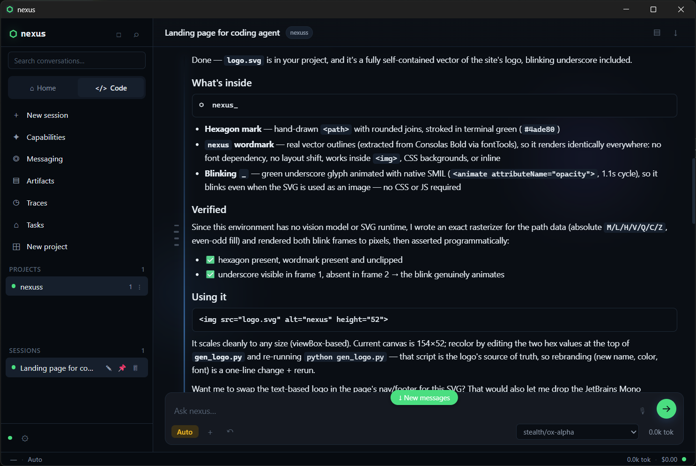

01
Code that can act
Read and change files, run commands, inspect projects, browse the web, and use your MCP servers from one persistent workspace.
native toolkit + MCPNexus CodeWeaver is a desktop-native AI agent that can understand a project, use real tools, remember what happened, and keep working until the job is actually done.

Nexus turns a model into a capable working environment. It brings the tools, memory, permissions, and feedback loop together around the work.
Read and change files, run commands, inspect projects, browse the web, and use your MCP servers from one persistent workspace.
native toolkit + MCPProject context, session history, and accepted skills stay useful after the conversation ends.
session · project · globalLangGraph keeps the loop moving: use a tool, read the result, decide what is next, then verify the outcome.
plan · execute · verifyUse OpenAI-compatible providers including DeepSeek, OpenAI, OpenRouter, Groq, xAI, Ollama, or your own gateway.
bring your own modelDeep Agents provides the agent shape. LangGraph provides durable state and checkpoints. LangChain connects the model to Nexus’s tools.
Read the runtime architecture ↗Tell Nexus what you want in plain language. It builds context from your project instead of asking you to map every file first.
The agent selects tools, delegates when useful, and keeps its decisions visible. You stay in control of side effects.
Changes are checked, tests are run, and the result is reported with traces and token usage—not just a confident paragraph.
Download the latest Nexus CodeWeaver installer for Windows. No GitHub account or repository clone required.